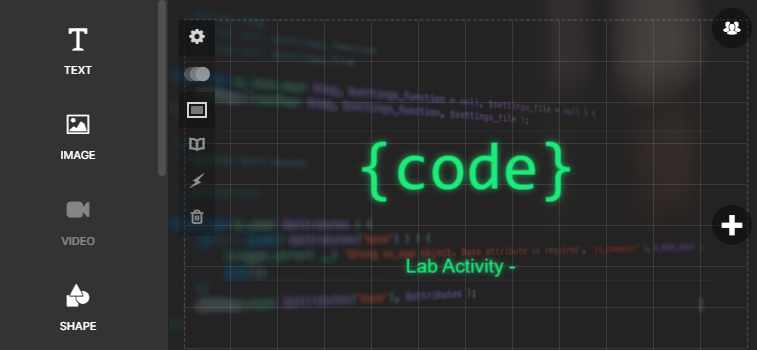
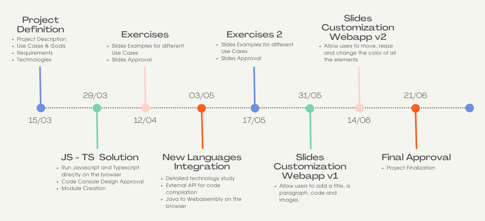
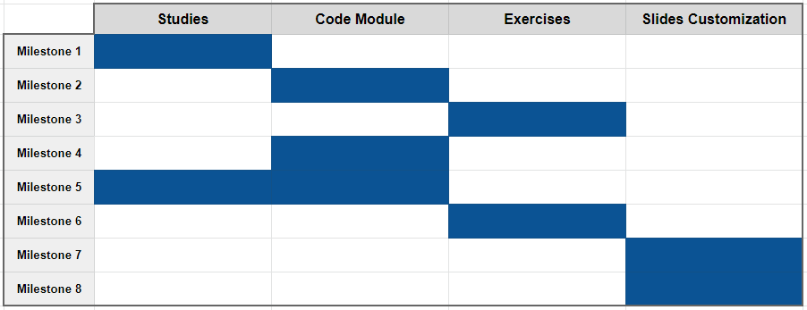

Project Presentation
A complete description can be found in this document
Idea: provide HTML Slides with runnable code
Help Students Learning Programming Languages
Support People with Vision Impairments
Future Integrations
Easily extendable with new:
Slides Customization Web Application
All the details and alternatives can be found in this TiddlyWiki Notebook
There are 8 milestones:
The complete timeline is publicly available in this spreadsheets document.
The followed iterations are the following:
